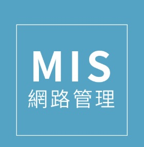

我是翊綸，目前就讀靜宜大學資管系，是一位延畢生。 出生在一個小的城市嘉義市，因為嘉義市真的很小， 所以從小就養成了騎車到處跑的習慣，充滿好奇心喜歡學習探索新事物， 最喜歡吃的東西是甜甜圈跟蒸蛋!

路亞釣魚是我最喜歡的休閒興趣，喜歡沒有計畫的探點， 背上釣竿一個腰包一台車和一個人，在台中這個都市裡，尋找靜謐的小溪流， 讓從慢步調的嘉義來到台中的我能夠短暫的停下，重新掌握生活的步調。

在大五的這年，多了很多時間來尋找未來的出入，我喜歡大學李資訊管理系帶給我的樂趣， 不管是畢業專題還是個個課程中的網頁設計，都讓我沉迷在一步步堆砌出心中所想的藍圖中， 在未來的三年內，我會朝著進入業界累積經驗以及作品的方向前進，並且掌握未來AI產業的趨勢，不斷精進自己保持好奇心， 讓自己能夠跟上日新月異的科技產業。
學歷：資訊管理相關科系
技能：Python、HTML、CSS、JavaScript
經驗：完成多項課堂專案與個人網站開發，並持續學習前端設計與程式實作。
我希望未來能在資訊相關領域持續發展，透過不斷學習與累積作品，
強化自己的技術能力與問題解決能力，朝更完整的個人作品集邁進。